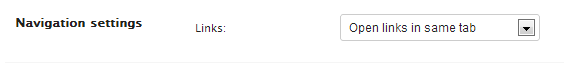

| orion.core.setting | ||
|---|---|---|
|
|
|
|
| orion.core.preference | orion.core.textlink | |
Orion plugins can define
settings using the orion.core.setting service. A setting defines some persistent information that is provided to one of the plugin's services. Defined settings appear on Orion's Settings page, and their values can be changed using an automatically-generated UI.
A setting is a combination of two more basic configuration elements:
To contribute one or more settings, the settings service property is used:
Setting[]. Defines Settings. Each Setting element has the following shape:
String. The PID for this setting. This PID occupies the same namespace as the PIDs contributed by
Managed Services, and must be unique in that respect.
String. Human-readable name of this setting.String[].
Optional. List of tags applying to this setting.
AttributeDefinition[]. Gives the properties that make up this setting. The shape of the AttributeDefinition element is explained in
Metatype documentation.
None. This service is completely declarative.
This example shows how to define a Setting with PID example.navconfig. This Setting has a single property newtab, which is boolean-typed. Because we've enumerated the property's possible values using an
options, the generated UI presentation will show a drop-down menu. Since we've provided a
defaultValue of false, the second option "Open links in a same tab" will selected by default.
define('orion/plugin', function(PluginProvider) {
var pluginProvider = new PluginProvider();
pluginProvider.registerService('orion.core.setting',
{},
{ settings: [
{ pid: 'example.navconfig',
name: 'Navigation settings',
properties: [
{ id: 'newtab',
name: 'Links',
type: 'boolean',
defaultValue: false,
options: [
{ label: "Open links in a new tab",
value: true
},
{ label: "Open links in same tab",
value: false
}
]
}
]
}
]
});
provider.connect();
});
When a user visits the Orion Settings page, they'll see an automatically-generated UI containing a drop-down menu, similar to the one shown below. Manipulating the drop-down menu causes the setting's value to change, and causes any Managed Services registered against the example.navconfig PID to have their [[Orion/Documentation/Developer Guide/Configuration services#Service methods|updated() methods]] invoked.

|
|

|
|
| orion.core.preference | orion.core.textlink |